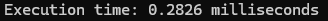
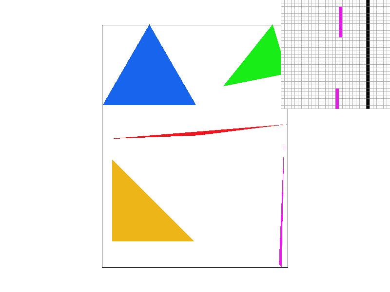

CS184/284A Summer 2025 Homework 1 Write-Up
Jake Pastoria & Archisha Nangia
Link to main webpage: https://cal-cs184.github.io/hw-webpages-su25-Jake-Pastoria/
Link to GitHub repository: https://github.com/cal-cs184/hw-rasterizer-jake-archisha
Link to website repo: https://github.com/cal-cs184/hw-webpages-su25-Jake-Pastoria

Overview
In this homework, we implemented a 2d rasterization pipeline with basic triangle rendering using the three-lines test, supersampling, transformations, antialiasing, barycentric color interpolation, and texture mapping. The early tasks focused on constructing an optimal rasterization algorithms, which provides a strong foundation for understanding the point-in-triangle sampling method. The later tasks solidify the weaknesses of naive rasterization implementations, and demonstrates different ways to antialias and reduce the effects of texture minification and magnification.Task 1: Drawing Single-Color Triangles
Our rasterization pipeline followed the "Three Line Tests" as mentioned in lecture, and works for both clockwise and counter-clockwise triangles. We did this by getting the dot product between the normal vector of each edge on the triangle and the vector to each sample point. For each individual edge, this dot product identifies whether or not this sample point is 'above' or 'inside that edge' relative to the triangle. This dot product can be represented as the following formula from lecture for any given sample point and two vertexes of the triangle.\[ L(x, y) = V · N = -(x - x0)(y1 - y0) + (y - y0)(x1 - x0) \]
If this value is greater than zero for all edges (or equal to zero if it's on the line), then we know this sample point must be inside of our triangle.
As of right now, our algorithm does this for every sample point in the 'bounding box' of each triangle to select a smaller number of points to test. This means that relative to the question asked in Task 1 regarding our algorithms efficiency, it has exactly the same efficiency as one that checks each sample within the bounding box of the triangle.
Extra Credit:
The main optimization that we applied to our initial code was to pull out some of the repeating calculations, which minimizes the number of accesses to memory as well as the number of operations. You can see that in our previous code, we use the entire equation for L(x,y) at each sample point. By pulling out the repeated code and operations, we were able to get our render time for 'basic/test4.svg' code to decrease by an average of around 13%.
|

|
|
|
|
Task 2: Antialiasing by Supersampling
In task 2, we implemented a supersampling algorithm in an attempt to antialias. The effects of this supersapling can be seen below, as increased sampling rates reduces jagged or disconnected edges.|

|

|

|
The supersampling method we implemented follows the methods described in lecture, which essentially details taking NxN samples per pixel and averaging those values. For each sample, we take NxN samples and add their color values to the
sample_buffer. From there, we go through this higher dimension buffer, essentially computing
a convolution to reduce the dimensions back to the correct number of pixels to be filled. This differs from our initial rasterization pipeline greatly, as supersampling adds
an almost continuous aspect due to the numerous samples per pixel. Now instead of checking just one spot per pixel and returning either filled or not filled as we did in the
previous task, we now compute the average of multiple samples per pixel to fill the pixel with a color. The benefit of this is the reduction in aliasing, as the decision to fill or not fill a pixel with a certain color becomes less discrete than the initial implementation of sampling once per pixel. For example, with 1 sample per pixel, a triangle that slightly misses the center of the pixel will not be shown at all. This can be seen above in the "1 sample per pixel" image, which demonstrates how certain edges can look completely disconnected. Meanwhile, supersampling allows this triangle to be partially represented in this pixel, as long as it passes through a couple of these smaller subsamples. This is seen in the images showing sample rates of 4 and 16.
Task 3: Transforms
For task 3, we made the robot do the popular dance "Gangnam Style." The robot is wearing a suit, and its arms are crossed over each other, with one of its legs being folded a bit higher than the other. This image is intended to be mid-dance.

|
|
Task 4: Barycentric coordinates
Barycentric coordinates are used as a method for linear interpolation, which can be applied in various ways. In our project, we use them for representing a linear interpolation of color across each triangle.The general idea of barycentric coordinates is that if each vertex (A, B, C) of a given triangle represents some value (in our case this value is a color, as seen in Figure 1 below), then we can represent the value of any coordinate (x,y) as a linear combination of \(α\), \(β\), and \(γ\) with the following equation:
\[ Color_{(x,y)} = αColor_A + βColor_B + γColor_C \] Here, \(α\) represents the distance from the point (x,y) to the edge BC, divided by the distance from vertex A to the edge BC. It is the proportion of the distance from the point (x,y) and the vertex A from the edge BC. This logic applies to all the other terms, where β is the same logic but for vertex B and edge AC.
To further understand Barycentric coordinates, we can first take a look at how it works for one triangle.
|
|
Here, we can see that all vertices have a color assigned to them, and as we get further away from each vertex, the colors begin to blend. For yellow vertex A in the bottom left for example, as the points in the triangle get further away from A, the proportion of the distance described above gets smaller, meaning α decreases and amount of color A (yellow) decreases.

|
Task 5: "Pixel sampling" for texture mapping
In this section, we implement pixel sampling to texture map a full resolution image using both bilinear and nearest-neighbor interpolation. The goal of this section is to correctly map a texture onto the triangles/shapes in the scene, thus projecting that color onto the screen space. Each vertex of each triangle in the scene has a UV coordinate, which corresponds to a certain texel in the texture. When this UV coordinate does not map directly onto a texel, we decide what color this pixel on screen should be through various methods of point sampling. In this assignment, we utilize two pixel-sampling approaches: bilinear and nearest neighbor.For nearest neighbor interpolation, we simply take the color value of the texel closest to our UV mapped coordinate. This generally results in a more pixelated look, and has similar pitfalls to the single sample per pixel rasterization that we implemented in the previous section.
For bilinear sampling, we instead linearly interpolate the 4 closest texels to our UV mapped coordinate. As you can see from the image below, this results in a slightly blurred look, which tends to be more visually appealing and smooth.
The results for nearest neighbor and bilinear sampling can be seen below.
|
|
|
|
|
|
Task 6: "Level Sampling" with mipmaps for texture mapping
Level sampling is the process of selecting the most appropriate mipmap level to determine the ideal level of detail and size that a texture should have based on how the texture appears in screen space. This is a key step because it allows realistic and detailed graphics by choosing how much texture detail to apply, even in cases of texture minification. Level sampling uses mipmaps to store downscaled, precomputed versions of the original texture. By picking the right level based on how the texture is scaled relative to the screen space, level sampling reduces aliasing and can also prevent issues of minification, such as the moiré pattern.In our implementation, we determine which mipmap level to use by looking at how much the texture coordinates (u,v) are changing between nearby pixels. We calculate the distance between the current coordinate and its neighbors using the distance formula in the x and y directions. We took the larger of the two distances and computed the log base 2 of it. This number shows us which mipmap level best fits with how much the texture is being scaled or zoomed at that spot. As seen below, nearest pixel sampling results in more jaggies and blocky edges, whereas bilinear sampling is smoother and blends, giving a more natural output. The results below depict the tradeoff between sharpness and smoothness depending on the sampling methods.
|
|
|
|
|
|
From the three techniques we implemented (pixel sampling, level sampling, and supersampling), we noticed tradeoffs in speed, memory usage, and antialiasing power.
Pixel sampling controls how the color of a pixel is selected from a texture. Nearest pixel sampling simply applies the color of the nearest texel, while bilinear sampling blends nearby texels. Nearest pixel sampling is faster as it only requires information about the nearest texel, which uses less memory. Its downside is that the result is blocky and contains more jaggies. Bilinear sampling interpolates the colors, resulting in a much smoother result. However, this requires more time, computing, and storage in memory. Overall, pixel sampling alone has modest antialiasing power, as only bilinear sampling results in any antialiasing.
Level sampling decides the level of the texture to use from the mipmap. One approach, which takes the zeroth level, uses the original resolution and texture. This is extremely fast and efficient, but is prone to aliasing and doesn’t assist in solving the problem of minification. Another approach, nearest level sampling, actually calculates the appropriate level for a given object in screen space. This method does a much better job at anti-aliasing, as it reduces the effects of minification. The final level sampling approach linearly interpolates various levels, which creates a greater sense of smoothness. As a result of this approach’s large computational cost, it has great quality and the ability to prevent visual artifacts and smoothly transition from high to low texture complexity. Overall, level sampling has a powerful ability to antialias, as it’s able to reduce the effects of minification through the various levels of texture mipmaps. The main tradeoff for this method is that storing mipmaps requires around 33% more memory space.
Finally, supersampling can antialias by increasing the sampling rate, which takes more than one sample per pixel. With a sampling rate of 1, the speed is fast, yet aliasing can be common due to the discrete nature of taking just one sample per pixel. Increasing the number of samples per pixel reduces aliasing but requires more memory, computations, and time. Supersampling has an extremely significant ability to antialias, as taking more samples smooths edges and eliminates disconnected lines. Although this method is great for antialiasing, the cost of increasing the sampling rate too much is a blurrier image, in addition to higher memory usage due to the dimension of the overall computation.
Overall, while antialiasing can make images look smooth, refined, and more visually comprehensible, it also requires more storage and time to compute and can even result in blurry images.